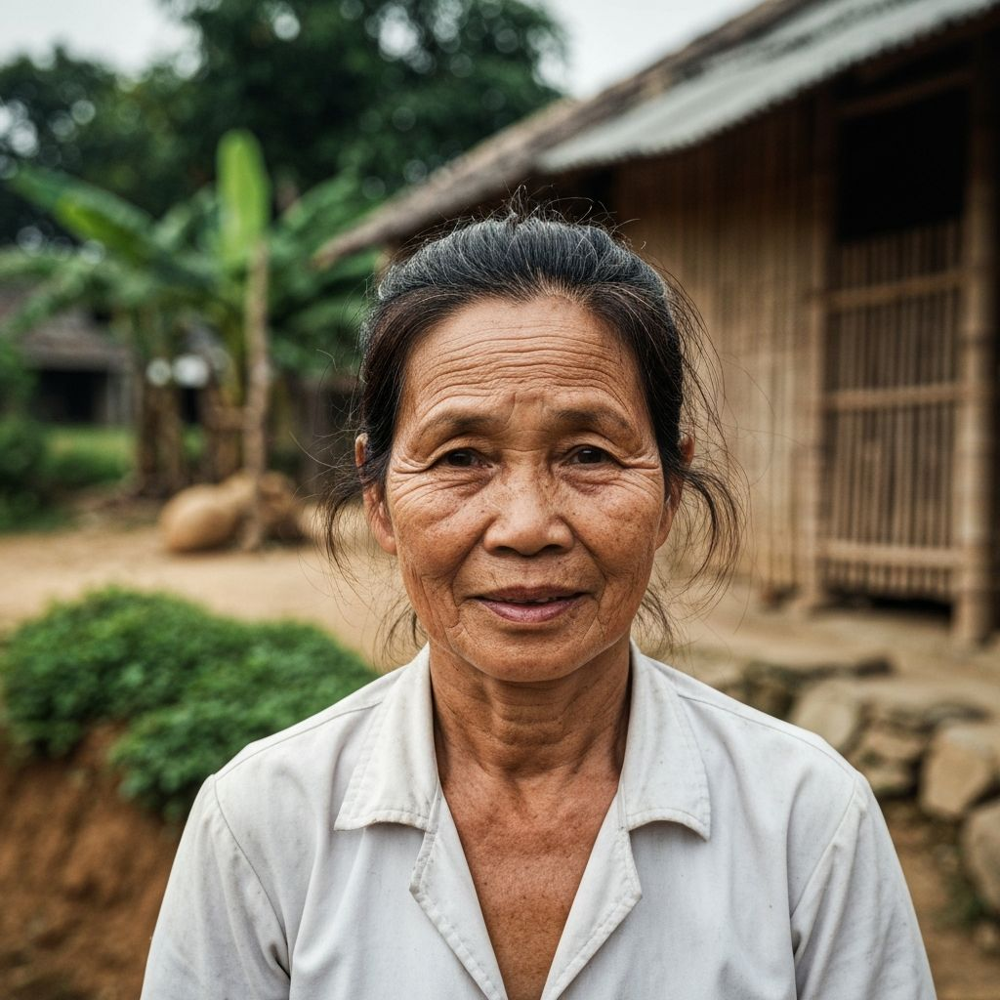
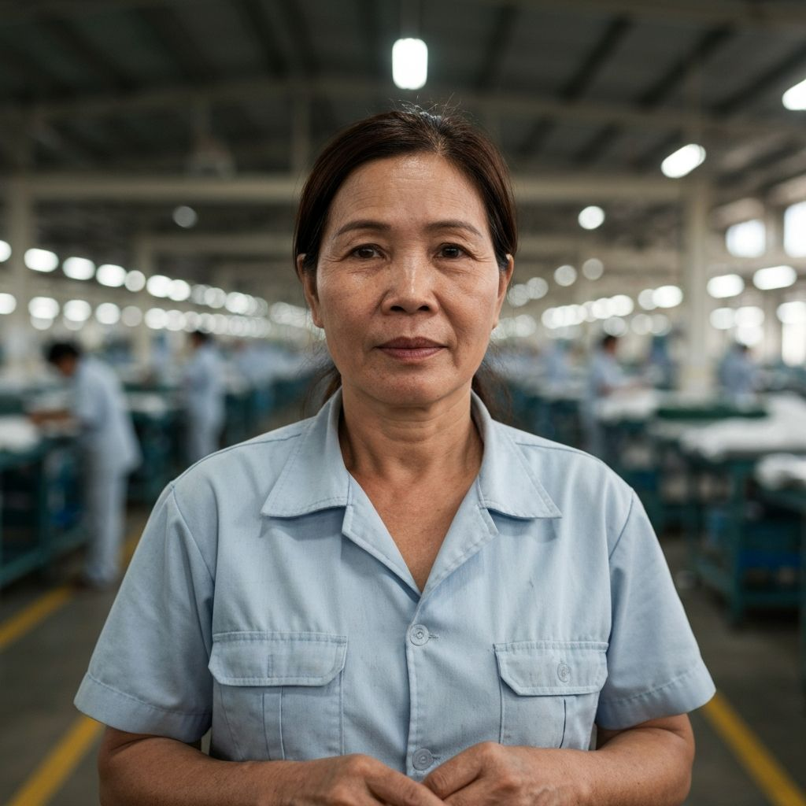
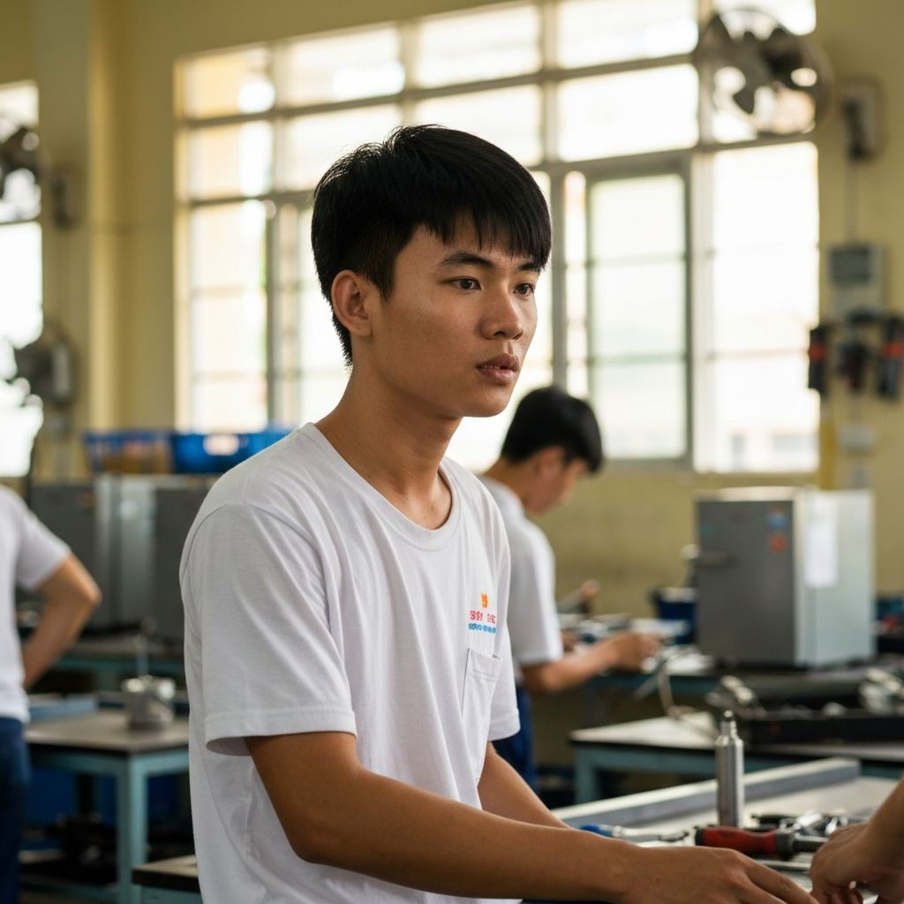

Trong làng quê miền Tây những năm 2020, cảnh quen nhất không còn là tiếng trẻ con nô đùa, mà là tiếng xe đò chạy đêm. Mỗi chuyến xe mang theo hai, ba người trẻ — và để lại những ngôi nhà vắng bóng ba thế hệ.
Theo Tổng cục Thống kê, giai đoạn 2009–2019, Đồng bằng sông Cửu Long là vùng duy nhất trong cả nước có tỷ lệ tăng dân số âm. Hơn 1,3 triệu người đã rời vùng đi nơi khác mưu sinh — phần lớn là lao động trẻ từ 18 đến 35 tuổi. Đến năm 2023, con số này tiếp tục tăng khi hạn mặn và mất mùa buộc thêm nhiều gia đình phải "tha phương cầu thực".
giai đoạn 2009–2019
dưới 35 tuổi
ít nhất 1 thành viên đi làm xa

PHẦN 01Ai đi, ai ở
Tại xã Tân Thành, huyện Cái Nước, Cà Mau, trưởng ấp Lê Văn Hoàng chỉ tay về phía con đường bê tông mới trải: "Cả ấp có 186 hộ. Giờ chỉ còn khoảng 40% là người trẻ. Số còn lại là ông bà và các cháu nhỏ. Nhiều nhà khoá cửa cả năm, Tết mới về."
Hoàng gọi đây là "làng khoá cửa" — một khái niệm đang dần trở nên quen thuộc ở ĐBSCL. Khi cha mẹ đi làm công nhân ở các khu công nghiệp phía Nam, ông bà ở lại trông cháu. Khi ông bà già yếu, các cháu được gửi về cho họ hàng, hoặc theo cha mẹ ra thành phố học trường công nhân.
PHẦN 02Ba chân dung, ba lựa chọn
Chúng tôi gặp ba người trong cùng một xã, cùng lứa tuổi, nhưng ba con đường hoàn toàn khác nhau. Họ đại diện cho ba ngã rẽ mà lớp trẻ miền Tây hôm nay phải đối mặt: đi, ở, hay trở về.

"Tôi ở lại vì mẹ già và mảnh đất. Hai con đi Bình Dương 8 năm rồi, mỗi năm về Tết được 5 ngày. Nhớ thì nhớ, nhưng tôi hiểu — ở đây không còn việc nữa."

"Tôi làm công nhân may ở KCN Sóng Thần đã 15 năm. Chồng cũng lên đó. Gửi con về cho má. Mỗi tháng gửi về 5–6 triệu. Không đi thì lấy gì nuôi con ăn học."

"Tôi làm ở Bình Dương 5 năm, học thêm nghề điện lạnh. Năm ngoái về mở tiệm ở chợ huyện. Thu nhập bằng 2/3 hồi ở Bình Dương, nhưng được ở bên vợ con."
"Người trẻ miền Tây không phải bỏ quê — họ đi tìm một đồng lương mà quê hương không còn đủ sức trả."TS. Võ Hồng Tú · Đại học Cần Thơ · Nghiên cứu Di dân ĐBSCL 2023
PHẦN 03Những ngôi làng chỉ còn ông bà

Bà Hồng Nhi (47 tuổi) pha một bình trà nóng, rót vào hai cái tách. Một tách cho khách, một tách cho mẹ bà — cụ Tám, 83 tuổi, đang ngồi trên chiếc võng lưới sau nhà. Ngôi nhà ba gian rộng rãi, nhưng chỉ còn hai con người.
"Hai đứa con tôi đi hết rồi. Đứa lớn 24 tuổi làm công nhân may, đứa nhỏ 21 tuổi làm phụ hồ. Đứa cháu nhỏ mới 7 tuổi, tụi nó gửi về cho bà nội tôi trông. Năm ngoái bà nội tôi mất, tụi nó đem cháu lên luôn."
Bà Nhi nói chậm rãi, không than thở, chỉ kể. Trong sân nhà, hàng cau đã ba năm không ra trái — không phải vì cây bệnh, mà vì không ai tưới, không ai bón phân. Cây cũng biết khi nào chủ nhà không còn quan tâm đến nó nữa.
PHẦN 04Những người trở về
Nhưng không phải ai đi cũng đi mãi. Võ Thanh Duy (27 tuổi) là một trong số ít người trẻ chọn con đường ngược — trở về. Sau 5 năm làm công nhân ở Bình Dương, Duy học thêm nghề điện lạnh qua một khoá đêm tại Đại học Bình Dương. Năm 2022, anh quyết định về quê mở tiệm.
"Lúc đó nhiều người cười. Ba má tôi còn nói: 'Con điên hả? Đi mãi mới học được nghề, giờ về chết đói.' Nhưng tôi tính thế này: ở Bình Dương lương tôi 11 triệu, trừ trọ, ăn uống, còn 4–5 triệu. Ở quê thu nhập 7–8 triệu, nhưng tôi ở nhà miễn phí, ăn cơm má nấu."
Điều quan trọng hơn tiền, Duy nói, là anh được nhìn con lớn lên. Con gái anh năm nay 2 tuổi. Hồi còn ở Bình Dương, vợ anh gửi con về cho bà nội, mỗi tháng họ về thăm một lần. "Có lần nó không nhận tôi làm ba nữa. Đó là lúc tôi quyết định phải về."
Duy không phải trường hợp hiếm. Theo khảo sát của Trung tâm Dịch vụ Việc làm Cà Mau, trong năm 2023 có khoảng 8.400 lao động trở về quê sau nhiều năm làm việc ngoài tỉnh — tăng 35% so với năm 2022. Một phần do dịch COVID-19 để lại "vết sẹo" tâm lý, một phần do chi phí sinh hoạt ở thành phố ngày càng cao.
"Nhưng họ về không có nghĩa là vùng đất đã hồi sinh," ông Trần Văn Tư, Phó giám đốc Trung tâm, nói thẳng. "Nhiều người về vì hết lựa chọn, chứ không phải vì quê có cơ hội. Nếu chính quyền không tạo được việc làm mới, 1–2 năm sau họ sẽ đi tiếp."
PHẦN 05Ngã rẽ của một thế hệ
Đi hay ở, với lớp trẻ miền Tây hôm nay, không còn là một lựa chọn cá nhân. Nó là một ngã rẽ tập thể — được định đoạt bởi dòng sông đang cạn, bởi đồng ruộng đang mặn hoá, bởi những nhà máy ở xa đang cần nhân công giá rẻ, và bởi một chính sách phát triển vùng chưa kịp theo kịp hiện thực.
Bà Hồng Nhi tiễn chúng tôi ra cổng khi trời đã về chiều. Cụ Tám vẫn ngồi trên võng, lắc lư. "Cô về nhớ chụp ảnh nhà tui, gửi cho hai đứa con tui coi. Tết này không biết tụi nó có về không." Bà cười, nhưng mắt đã đỏ.
Ở miền Tây, nỗi nhớ không còn là chuyện riêng của mỗi gia đình. Nó đã trở thành ngôn ngữ chung của cả một vùng đất đang dần vắng người.